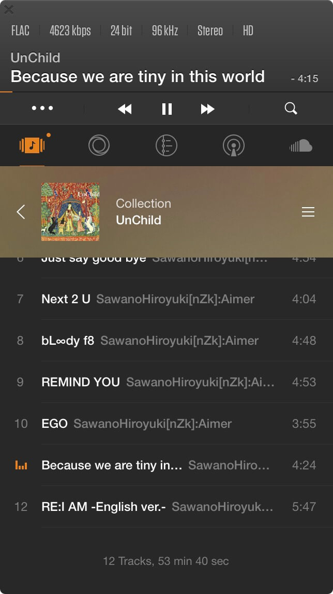

<div ref="streamContainer" class="stream-container">
    <div class="post-list-container post-list-container-shadow">
        <div class="post">
            <div class="post-head-wrapper"
                 style="background-image: url('/2017/06/10/入耳机坑/pic1.jpeg')">
                <div class="post-title">
                    入耳机坑
                    <div class="post-meta">
                        <time datetime="2017-06-10T13:46:36.000Z" itemprop="datePublished">
                            2017-06-10 13:46
                        </time>&nbsp;
                        
                        
                        <i class="material-icons" style="">folder</i>
                        
                        <a href='/categories/Blog/'>Blog</a>
                        
                        
    
                        
                        
                        <i class="material-icons" style="">label</i>
                        
                        <a href='/tags/Blog/'>Blog</a>, 
                        
                        <a href='/tags/音乐/'>音乐</a>, 
                        
                        <a href='/tags/ATH-CKS1100IS/'>ATH-CKS1100IS</a>
                        
                        
                    </div>
                </div>
            </div>
    
            <div class="post-body-wrapper">
                <div class="post-body">
                    <!-- no node -->

<span id="more"></span>

<blockquote>
<p>工作一个月了，很高兴，已经开始慢慢适应公司，适应这里的一切。<br>很高兴，并且很庆幸自己做出的选择。<br>接手了项目，相信我可以很好地胜任。<br>我喜欢前端，我喜欢自己开发的界面，我对界面有一些强迫症般的特殊要求，并且我对用户交互也有着自己独特的看法。<br>这周工作比较忙碌，在完成工作的同时，我也在继续进行一件事“终身学习”，补我缺失的过去。<br>《HTTP图解》、《ES6》<br>开头，说了些近事，那么下面开始正题。</p>
</blockquote>
<p><strong>ATH-CKS1100IS</strong>关注了一款很久的耳机，应该算是入门级别的吧，虽然我还没有很懂，但是应该是入门级别，我不敢吹逼。</p>
<p>那么因为大学期间也买过AKG，所以简单的知道买来耳机要煲一煲。</p>
<p>本来听音乐是用社交性极强的网易云音乐，但是现在我发现，网易云音乐满足不了这副耳机。</p>
<p>那么应该换一个播放器对不对，那么经过我浅薄的搜索，我选择使用 **<a target="_blank" rel="noopener" href="https://www.voxmedia.com/pages/about-vox-media">VOX</a>**。</p>
<p></p>
<p>MAC OS上的界面也是极其清新的。二话不说，上图。</p>
<p></p>
<p>iPhone上只需要25软妹币，可以很轻松的入手。</p>
<p>那么说了这么多，只说了播放器是不行的，说下音乐资源的下载地吧。</p>
<ul>
<li><a target="_blank" rel="noopener" href="http://www.zasv.net/">杂碎音乐论坛</a> - <strong>推荐</strong></li>
<li><a target="_blank" rel="noopener" href="http://www.sonystyle.com.cn/app/download/sonyselect/index.htm">Sony Select</a></li>
<li><a target="_blank" rel="noopener" href="http://www.hifitrack.com/zh-hant">hifitrack</a></li>
</ul>
<hr>
<p>还有就是，百度网盘真的渣（后简称：渣盘），这里推荐<a target="_blank" rel="noopener" href="http://bbs.feng.com/forum.php?mod=viewthread&tid=10895696&extra=page1filterauthororderbydatelineorderbydateline">《aria2，破解百度云限速的傻瓜式教程》</a>，让我们一起卸载渣盘，跟渣盘说再见吧！形容渣盘只有一个字：<strong>渣</strong></p>
<p>好啦，来一首不错的歌曲吧。</p>
<p><a target="_blank" rel="noopener" href="https://music.163.com/#/song?id=481537710"></a></p>

                </div>
            </div>

            
            
            
    
            
    
            
        </div>
    </div>
    
</div>


